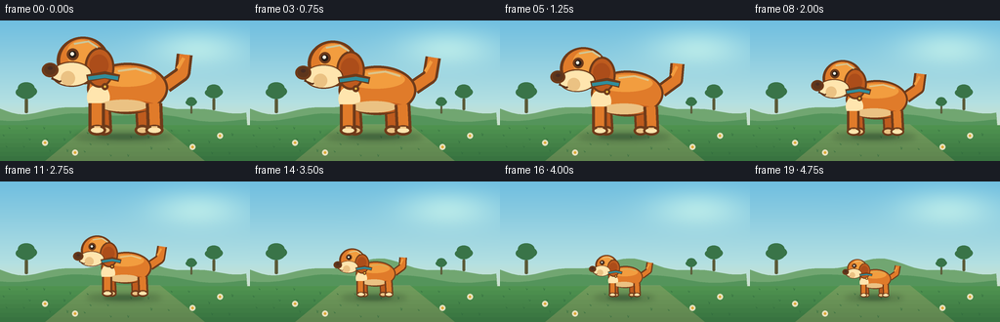
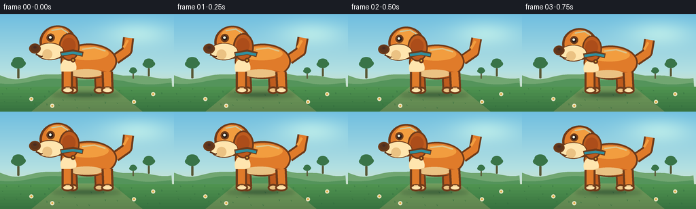

CODING AGENTS AS PIXEL WORLD MODELS
traex/DeepSeek-V4.1-Flash · instance_preservation_0048
点击播放 · 原生 RGB 像素
逐轮保存的候选
回放视频、检查图与代码变化。
每份候选均可单独播放。实际图片检查记录在下方工具轨迹中。
候选 01播放与检查图
点击播放 · 原生 RGB 像素

展开代码变化
--- 上一保存版本
+++ 本次保存版本
@@ -0,0 +1,282 @@
+from pathlib import Path
+import math
+
+import numpy as np
+from PIL import Image, ImageDraw, ImageFilter
+
+from artifact_io import save
+
+
+WIDTH = 256
+HEIGHT = 144
+FPS = 4
+FRAMES = 20
+SS = 4
+
+
+def mix(a, b, t):
+ return tuple(round(x + (y - x) * t) for x, y in zip(a, b))
+
+
+def smoothstep(t):
+ t = max(0.0, min(1.0, t))
+ return t * t * (3.0 - 2.0 * t)
+
+
+def make_background():
+ w, h = WIDTH * SS, HEIGHT * SS
+ yy = np.arange(h, dtype=np.float32)[:, None] / max(1, h - 1)
+
+ top = np.array([111, 190, 224], dtype=np.float32)
+ middle = np.array([179, 224, 226], dtype=np.float32)
+ low = np.array([244, 224, 172], dtype=np.float32)
+ sky = np.empty((h, w, 3), dtype=np.float32)
+
+ upper = yy < 0.58
+ upper_t = np.clip(yy / 0.58, 0, 1)
+ lower_t = np.clip((yy - 0.58) / 0.42, 0, 1)
+ for c in range(3):
+ sky[:, :, c] = np.where(
+ upper,
+ top[c] + (middle[c] - top[c]) * upper_t,
+ middle[c] + (low[c] - middle[c]) * lower_t,
+ )
+
+ # Soft late-afternoon light in the upper-right corner.
+ xx = np.arange(w, dtype=np.float32)[None, :] / max(1, w - 1)
+ sun = np.exp(-(((xx - 0.79) * 2.6) ** 2 + ((yy - 0.19) * 3.8) ** 2) * 4.0)
+ sky += sun[:, :, None] * np.array([46, 30, 8], dtype=np.float32)
+
+ image = Image.fromarray(np.clip(sky, 0, 255).astype(np.uint8), "RGB")
+ draw = ImageDraw.Draw(image, "RGBA")
+
+ # Layered distant meadow.
+ far_points = [(0, h)]
+ for x in range(0, w + 1, 24):
+ u = x / w
+ y = h * (0.61 + 0.045 * math.sin(u * 8.5 + 0.4) + 0.018 * math.sin(u * 21.0))
+ far_points.append((x, y))
+ far_points.append((w, h))
+ draw.polygon(far_points, fill=(113, 166, 113, 255))
+
+ mid_points = [(0, h)]
+ for x in range(0, w + 1, 24):
+ u = x / w
+ y = h * (0.69 + 0.025 * math.sin(u * 6.0 + 2.1) + 0.012 * math.sin(u * 17.0))
+ mid_points.append((x, y))
+ mid_points.append((w, h))
+ draw.polygon(mid_points, fill=(84, 148, 91, 255))
+
+ # Small trees give the landscape scale without competing with the dog.
+ for tx, base_y, crown, trunk in (
+ (0.105, 0.645, 0.060, 0.018),
+ (0.855, 0.626, 0.050, 0.015),
+ (0.765, 0.655, 0.032, 0.010),
+ ):
+ x = tx * w
+ y = base_y * h
+ tw = trunk * w
+ cw = crown * w
+ draw.rounded_rectangle(
+ (x - tw * 0.36, y - cw * 0.82, x + tw * 0.36, y + cw * 0.12),
+ radius=max(2, int(tw * 0.32)),
+ fill=(91, 91, 57, 255),
+ )
+ for dx, dy, r in (
+ (-0.22, -0.50, 0.48),
+ (0.20, -0.55, 0.52),
+ (0.00, -0.78, 0.55),
+ (0.00, -0.45, 0.58),
+ ):
+ draw.ellipse(
+ (
+ x + dx * cw - r * cw,
+ y - cw * 0.76 + dy * cw - r * cw * 0.68,
+ x + dx * cw + r * cw,
+ y - cw * 0.76 + dy * cw + r * cw * 0.68,
+ ),
+ fill=(57, 116, 72, 255),
+ )
+
+ # Foreground grass with fine tonal bands.
+ ground_y = 0.745 * h
+ draw.rectangle((0, ground_y, w, h), fill=(70, 137, 75, 255))
+ for band in range(8):
+ y0 = ground_y + band * (h - ground_y) / 8
+ color = mix((78, 146, 79), (53, 111, 62), band / 8)
+ draw.rectangle((0, y0, w, y0 + (h - ground_y) / 8 + 1), fill=color + (255,))
+
+ # A pale path behind the dog keeps the silhouette readable.
+ path = [
+ (w * 0.36, ground_y - 4),
+ (w * 0.64, ground_y - 4),
+ (w * 0.82, h),
+ (w * 0.18, h),
+ ]
+ draw.polygon(path, fill=(198, 178, 120, 70))
+
+ # Grass tufts and tiny flowers, kept away from the face area.
+ tuft_color = (46, 104, 61, 190)
+ for i in range(30):
+ gx = ((i * 83 + 31) % (w - 16)) + 8
+ gy = ground_y + 14 + ((i * 47) % max(20, int(h - ground_y - 24)))
+ length = 5 + (i % 4) * 2
+ draw.line((gx, gy, gx - 3, gy - length), fill=tuft_color, width=2)
+ draw.line((gx + 1, gy, gx + 3, gy - length + 2), fill=tuft_color, width=2)
+
+ for fx, fy in ((0.18, 0.87), (0.77, 0.90), (0.88, 0.82), (0.30, 0.94)):
+ x, y = fx * w, fy * h
+ draw.ellipse((x - 3 * SS, y - 3 * SS, x + 3 * SS, y + 3 * SS), fill=(248, 236, 202, 230))
+ draw.ellipse((x - 1.2 * SS, y - 1.2 * SS, x + 1.2 * SS, y + 1.2 * SS), fill=(224, 168, 52, 255))
+
+ return image
+
+
+def local_ellipse(draw, transform, box, fill, outline=None, width=1):
+ x0, y0, x1, y1 = box
+ p0 = transform(x0, y0)
+ p1 = transform(x1, y1)
+ draw.ellipse((p0[0], p0[1], p1[0], p1[1]), fill=fill, outline=outline, width=width)
+
+
+def local_line(draw, transform, points, fill, width, joint="curve"):
+ pixels = [transform(x, y) for x, y in points]
+ draw.line(pixels, fill=fill, width=max(1, int(width)), joint=joint)
+
+
+def draw_dog(canvas, cx, baseline, scale, phase):
+ dog_layer = Image.new("RGBA", canvas.size, (0, 0, 0, 0))
+ draw = ImageDraw.Draw(dog_layer, "RGBA")
+
+ def t(x, y):
+ return (cx + x * scale * SS, baseline + y * scale * SS)
+
+ unit = scale * SS
+ outline_w = max(2, round(2.25 * unit))
+ dark = (94, 53, 27, 255)
+ outline = (111, 59, 26, 255)
+ orange = (224, 123, 42, 255)
+ orange_light = (242, 157, 63, 255)
+ orange_shadow = (190, 91, 30, 255)
+ cream = (255, 229, 174, 255)
+ cream_shadow = (235, 194, 131, 255)
+
+ wag = math.sin(phase * math.tau) * 0.16
+ ear_swing = math.sin(phase * math.tau + 0.8) * 2.2
+
+ # Tail, drawn behind the torso.
+ tail_root = (35, -43)
+ tail_mid = (49, -53 + 2.0 * wag)
+ tail_tip = (51 + 7 * wag, -69 - 3 * wag)
+ local_line(draw, t, [tail_root, tail_mid, tail_tip], outline, 13.5 * unit)
+ local_line(draw, t, [tail_root, tail_mid, tail_tip], orange, 9.0 * unit)
+ local_line(draw, t, [(45, -57 + wag), (50 + 3 * wag, -66 - 2 * wag)], orange_light, 3.2 * unit)
+
+ # Far legs.
+ for x in (15, -17):
+ local_line(draw, t, [(x, -25), (x + 1, -7)], outline, 12.0 * unit)
+ local_line(draw, t, [(x, -25), (x + 1, -7)], orange_shadow, 7.6 * unit)
+ local_ellipse(draw, t, (x - 6, -10, x + 7, -1), cream_shadow, outline, outline_w)
+
+ # Main torso: rounded corgi-like silhouette.
+ local_ellipse(draw, t, (-31, -62, 37, -19), outline, outline, outline_w)
+ local_ellipse(draw, t, (-29, -60, 35, -21), orange, None, 1)
+ local_ellipse(draw, t, (-24, -58, 27, -42), orange_light, None, 1)
+ local_ellipse(draw, t, (-18, -30, 28, -21), orange_shadow, None, 1)
+
+ # Cream chest and belly.
+ local_ellipse(draw, t, (-31, -44, -12, -22), cream, None, 1)
+ local_ellipse(draw, t, (-20, -31, 20, -21), cream_shadow, None, 1)
+
+ # Near legs.
+ for x, shift in ((-23, 0), (25, 1)):
+ local_line(draw, t, [(x, -28), (x + shift, -7)], outline, 14.0 * unit)
+ local_line(draw, t, [(x, -28), (x + shift, -7)], orange, 8.8 * unit)
+ local_ellipse(draw, t, (x - 7, -10, x + 8, -1), cream, outline, outline_w)
+ local_line(draw, t, [(x - 2, -8), (x + 3, -8)], cream_shadow, 1.6 * unit)
+
+ # Neck joins the head cleanly to the body.
+ local_ellipse(draw, t, (-45, -77, -14, -45), outline, outline, outline_w)
+ local_ellipse(draw, t, (-43, -75, -16, -47), orange, None, 1)
+
+ # Head and floppy ear.
+ local_ellipse(draw, t, (-58 + ear_swing, -84, -14 + ear_swing, -44), outline, outline, outline_w)
+ local_ellipse(draw, t, (-55 + ear_swing, -82, -17 + ear_swing, -46), orange, None, 1)
+ local_ellipse(draw, t, (-48, -81, -23, -58), orange_light, None, 1)
+
+ local_ellipse(draw, t, (-33, -75, -8, -41), outline, outline, outline_w)
+ local_ellipse(draw, t, (-31, -73, -10, -43), orange_shadow, None, 1)
+ local_ellipse(draw, t, (-29, -69, -13, -51), (172, 77, 26, 255), None, 1)
+
+ # Muzzle, nose, eye, and a small friendly smile.
+ local_ellipse(draw, t, (-61, -63, -27, -42), outline, outline, outline_w)
+ local_ellipse(draw, t, (-60, -62, -28, -43), cream, None, 1)
+ local_ellipse(draw, t, (-69, -62, -55, -50), outline, outline, max(2, outline_w - 1))
+ local_ellipse(draw, t, (-67, -61, -57, -52), dark, None, 1)
+ local_ellipse(draw, t, (-64, -59, -60, -56), (74, 44, 33, 255), None, 1)
+
+ local_line(draw, t, [(-61, -49), (-54, -46), (-47, -50)], dark, 1.65 * unit)
+ local_ellipse(draw, t, (-53, -55, -41, -43), cream_shadow, None, 1)
+
+ local_ellipse(draw, t, (-48, -74, -38, -64), outline, outline, max(2, outline_w - 1))
+ local_ellipse(draw, t, (-46, -72, -40, -66), (39, 29, 24, 255), None, 1)
+ local_ellipse(draw, t, (-45, -71, -42, -68), (255, 250, 226, 255), None, 1)
+
+ # Collar and tag add one crisp color accent.
+ local_line(draw, t, [(-31, -49), (-16, -52), (-4, -49)], outline, 6.2 * unit)
+ local_line(draw, t, [(-30, -49), (-16, -51), (-5, -49)], (48, 142, 156, 255), 3.4 * unit)
+ local_ellipse(draw, t, (-19, -45, -13, -39), (249, 195, 70, 255), outline, max(2, outline_w - 1))
+
+ # Fur highlights.
+ local_line(draw, t, [(-5, -55), (10, -57), (23, -53)], (255, 188, 92, 165), 2.0 * unit)
+ local_line(draw, t, [(-42, -78), (-30, -80), (-22, -75)], (255, 198, 104, 145), 1.8 * unit)
+
+ canvas.alpha_composite(dog_layer)
+
+
+def make_frame(index):
+ background = make_background()
+ canvas = background.convert("RGBA")
+ overlay = Image.new("RGBA", canvas.size, (0, 0, 0, 0))
+ draw = ImageDraw.Draw(overlay, "RGBA")
+
+ t = index / (FRAMES - 1)
+ eased = smoothstep(t)
+ scale = 1.22 - 0.75 * eased
+ cx = 127 * SS
+ baseline = 119.0 * SS
+
+ # Ground shadow shrinks with the dog.
+ shadow_w = (51 - 21 * eased) * SS
+ shadow_h = (9 - 3.3 * eased) * SS
+ draw.ellipse(
+ (cx - shadow_w, baseline - shadow_h * 0.48, cx + shadow_w, baseline + shadow_h * 0.52),
+ fill=(35, 75, 48, 78),
+ )
+ overlay = overlay.filter(ImageFilter.GaussianBlur(3.0 * SS))
+ canvas.alpha_composite(overlay)
+
+ # A tiny, secondary contact shadow keeps the feet grounded.
+ contact = Image.new("RGBA", canvas.size, (0, 0, 0, 0))
+ contact_draw = ImageDraw.Draw(contact, "RGBA")
+ cw = (28 - 12 * eased) * SS
+ contact_draw.ellipse(
+ (cx - cw, baseline - 2.2 * SS, cx + cw, baseline + 2.2 * SS),
+ fill=(32, 69, 43, 95),
+ )
+ canvas.alpha_composite(contact.filter(ImageFilter.GaussianBlur(1.5 * SS)))
+
+ phase = index / (FRAMES - 1) * 2.4
+ draw_dog(canvas, cx, baseline, scale, phase)
+ frame = canvas.convert("RGB").resize((WIDTH, HEIGHT), Image.Resampling.LANCZOS)
+ return np.asarray(frame, dtype=np.uint8)
+
+
+def main():
+ case_dir = Path(__file__).resolve().parent
+ frames = np.stack([make_frame(index) for index in range(FRAMES)])
+ save(frames, case_dir)
+
+
+if __name__ == "__main__":
+ main()
候选 02播放与检查图
点击播放 · 原生 RGB 像素


展开代码变化
--- 上一保存版本
+++ 本次保存版本
@@ -47,7 +47,7 @@
sun = np.exp(-(((xx - 0.79) * 2.6) ** 2 + ((yy - 0.19) * 3.8) ** 2) * 4.0)
sky += sun[:, :, None] * np.array([46, 30, 8], dtype=np.float32)
- image = Image.fromarray(np.clip(sky, 0, 255).astype(np.uint8), "RGB")
+ image = Image.fromarray(np.clip(sky, 0, 255).astype(np.uint8))
draw = ImageDraw.Draw(image, "RGBA")
# Layered distant meadow.
可观测工具轨迹
实际执行的命令与返回图片。
命令 1exit 0
/bin/bash -c "pwd && rg --files -g 'prompt.txt' -g 'GENERATION_RULES.md' -g 'task_spec.json' -g '"'!**/.git/**'"'"
命令 2exit 0
/bin/bash -c 'git status --short && ls -la'
命令 3exit 0
/bin/bash -c 'cat prompt.txt'
命令 4exit 0
/bin/bash -c 'cat GENERATION_RULES.md'
命令 5exit 0
/bin/bash -c 'cat task_spec.json'
命令 6exit 0
/bin/bash -c "sed -n '1,240p' artifact_io.py"
命令 7exit 0
/bin/bash -c 'python generate.py'
命令 8exit 0
/bin/bash -c 'ls -lh index.html pixels.npz inspection.png transition_check.png frames/*.png | tail -n 8'
命令 9exit 0
/bin/bash -c 'command -v chafa || command -v viu || command -v img2txt || true'
命令 10exit 0
/bin/bash -c "python - <<'PY'
from PIL import Image
import numpy as np
for i in (0,5,10,15,19):
a=np.asarray(Image.open(f'frames/{i:02d}.png'))
# Orange dog pixels: warm, saturated, with red clearly above blue.
r,g,b=a[:,:,0].astype(int),a[:,:,1].astype(int),a[:,:,2].astype(int)
m=(r>150)&(r>g+25)&(g>b+20)
ys,xs=np.where(m)
print(i, 'orange_bbox', (xs.min(),ys.min(),xs.max(),ys.max()), 'count',len(xs))
PY"命令 11exit 0
/bin/bash -c "python - <<'PY'
from PIL import Image
import numpy as np
chars=[]
for i in (0,10,19):
a=np.asarray(Image.open(f'frames/{i:02d}.png').resize((64,36),Image.Resampling.NEAREST)).astype(int)
print('\\nFRAME',i)
for row in a:
s=''
for r,g,b in row:
if r>235 and g>235 and b>210: c='.'
elif r>180 and g>95 and g<190 and b<90 and r>g+45: c='O'
elif r>100 and g<100 and b<70: c='#'
elif r>230 and g>180 and b<100: c='y'
elif g>r+10 and g>b+10: c=','
elif b>r+20 and b>g: c='~'
elif r>180 and g>160 and b>100: c='p'
elif r>160 and g>130 and b<110: c='o'
else: c=' '
s+=c
print(s.rstrip())
PY"命令 12exit 0
/bin/bash -c "python - <<'PY'
from PIL import Image
import numpy as np
for i in (0,10,19):
a=np.asarray(Image.open(f'frames/{i:02d}.png')).astype(int)
# focus around center dog only; print 80x44 crop as ANSI truecolor half blocks
crop=a[12:140,38:218]
H,W=crop.shape[:2]
# classify based on nearest of palette clusters for a compact semantic view
pal={
'K':(92,52,27),'O':(224,123,42),'L':(242,157,63),'C':(255,229,174),'c':(235,194,131),
'S':(190,91,30),'N':(39,29,24),'T':(48,142,156),'G':(70,137,75),'g':(84,148,91),
'P':(198,178,120),'B':(111,190,224),' ': (244,224,172)
}
keys=list(pal); colors=np.array([pal[k] for k in keys])
ds=((crop[:,:,None,:]-colors[None,None,:,:])**2).sum(3)
idx=ds.argmin(2)
print('\\nFRAME',i)
for y in range(0,H,4):
s=''
for x in range(0,W,2):
j=idx[y:y+4,x:x+2].ravel()
vals,counts=np.unique(j,return_counts=True)
s+=keys[vals[counts.argmax()]]
print(s.rstrip())
PY"命令 13exit 0
/bin/bash -c "python - <<'PY'
import json, re
from pathlib import Path
html=Path('index.html').read_text()
m=re.search(r'const DATA = (\\{.*?\\});',html,re.S)
print('index bytes',len(html),'has payload',bool(m))
if m:
d=json.loads(m.group(1)); print({k:d[k] for k in ('width','height','frames','fps','audio')}, 'deltas',len(d['deltas']))
PY"命令 14exit 0
/bin/bash -c "python - <<'PY'
from PIL import Image
import numpy as np
frames=[]
for i in range(20):
a=np.asarray(Image.open(f'frames/{i:02d}.png')).astype(np.int16)
frames.append(a)
r,g,b=a[:,:,0],a[:,:,1],a[:,:,2]
dog=(r>155)&(r>g+30)&(g>b+22)
dog[:12]=False; dog[128:]=False; dog[:,:60]=False; dog[:,205:]=False
ys,xs=np.where(dog)
print(f'{i:02d} orange={dog.sum():4d} bbox=({xs.min():3d},{ys.min():3d})-({xs.max():3d},{ys.max():3d})')
frames=np.stack(frames)
print('shape',frames.shape,'dtype',frames.dtype)
print('mean adjacent RGB delta',np.abs(np.diff(frames,axis=0)).mean())
PY"命令 15exit 0
/bin/bash -c 'command -v ffmpeg || true; command -v ffprobe || true'
命令 16exit 0
/bin/bash -c 'head -c 1000 index.html'
命令 17exit 0
/bin/bash -c "rg -o 'const [A-Za-z_]+ ?=' index.html | head"
命令 18exit 1
/bin/bash -c "python - <<'PY'
import json,re
from pathlib import Path
s=Path('index.html').read_text(); m=re.search(r'const DATA=(\\{.*?\\}),\\n',s,re.S)
print('payload',bool(m))
d=json.loads(m.group(1)); print({k:d[k] for k in ('id','width','height','frames','fps','audio')},'deltas',len(d['deltas']),'caption',d['caption'])
PY"命令 19exit 0
/bin/bash -c "python - <<'PY'
from pathlib import Path
s=Path('index.html').read_text(); i=s.index('const DATA='); print(repr(s[i:i+120])); print(repr(s[-300:]))
PY"命令 20exit 0
/bin/bash -c "python -m py_compile generate.py && python - <<'PY'
import hashlib
from pathlib import Path
for p in ('pixels.npz','index.html','inspection.png'):
print(p, hashlib.sha256(Path(p).read_bytes()).hexdigest()[:16])
PY"命令 21exit 0
/bin/bash -c "python generate.py && python - <<'PY'
import hashlib
from pathlib import Path
for p in ('pixels.npz','index.html','inspection.png'):
print(p, hashlib.sha256(Path(p).read_bytes()).hexdigest()[:16])
PY"命令 22exit 1
/bin/bash -c "python generate.py && python - <<'PY'
import json,re
from pathlib import Path
import numpy as np
from PIL import Image
z=np.load('pixels.npz')['pixels']
assert z.shape==(144,256,20), z.shape
files=[]
for i in range(20):
a=np.asarray(Image.open(f'frames/{i:02d}.png'))
files.append(a)
assert a.shape==(144,256,3)
got=((z[:,:,i]>>16)&255,(z[:,:,i]>>8)&255,z[:,:,i]&255)
assert all(np.array_equal(got[j],a[:,:,j]) for j in range(3)), i
s=Path('index.html').read_text(); start=s.index('const DATA=')+len('const DATA='); end=s.index(';',start)
d=json.loads(s[start:end])
assert (d['width'],d['height'],d['frames'],d['fps'])==(256,144,20,4.0)
assert len(d['deltas'])==19 and d['audio'] is None
print('validated: 20 frames, 256x144, 4 fps, packed RGB exact, 19 deltas, no audio')
PY"命令 23exit 0
/bin/bash -c "python - <<'PY'
import json
from pathlib import Path
import numpy as np
from PIL import Image
z=np.load('pixels.npz')['pixels']
assert z.shape==(144,256,20), z.shape
for i in range(20):
a=np.asarray(Image.open(f'frames/{i:02d}.png'))
assert a.shape==(144,256,3)
got=np.stack(((z[:,:,i]>>16)&255,(z[:,:,i]>>8)&255,z[:,:,i]&255),axis=2)
assert np.array_equal(got,a), i
s=Path('index.html').read_text(); start=s.index('const DATA=')+len('const DATA=')
d,end=json.JSONDecoder().raw_decode(s,start)
assert (d['width'],d['height'],d['frames'],d['fps'])==(256,144,20,4.0)
assert len(d['deltas'])==19 and d['audio'] is None
print('validated: 20 frames, 256x144, 4 fps, packed RGB exact, 19 deltas, no audio')
PY"保存候选 2 份；完成命令 23 次；可验证图片返回 0 张。原始 API 响应与完整日志保留在本地。